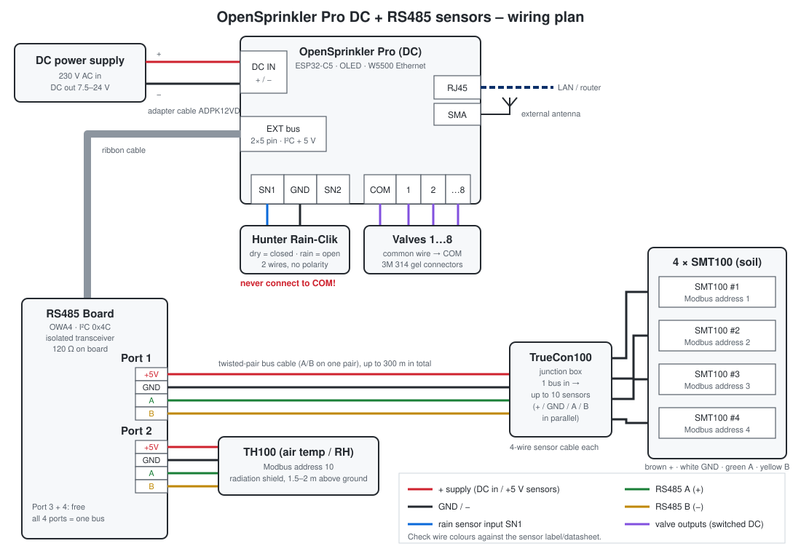

OpenSprinkler Pro with RS485 Sensors – Assembly and User Guide
This guide covers a complete professional setup: OpenSprinkler Pro (DC, Ethernet) with the OpenSprinkler RS485 Board, Truebner SMT100 soil moisture sensors, a Truebner TH100 air temperature/humidity sensor, a TrueCon100 junction box and a Hunter Rain-Clik rain sensor.
Related pages: Analog Sensor Config, Sensor Automation and Monitors, OpenSprinkler Pro.
Quick reference (PDF, 2 pages)
Download the quick reference (English) · Kurzreferenz (Deutsch)
1. Components
| Qty | Component | Purpose |
|---|---|---|
| 1 | OpenSprinkler Pro, DC variant, Ethernet + external antenna | Controller, 8 zones, sensor inputs SN1/SN2, EXT expansion bus |
| 1 | DC power supply + adapter cable 7.5–12 V DC (ADPK12VDC) | Power for controller and valves |
| 1–2 | OpenSprinkler RS485 Board (Truebner RS485 adapter) | I²C → RS485/Modbus RTU, 4 terminal blocks |
| 4 | Truebner SMT100 (RS485 Modbus) | Soil moisture, soil temperature, permittivity |
| 1 | Truebner TH100 (RS485 Modbus) | Air temperature and relative humidity |
| 1 | Truebner TrueCon100 (RS485) | Field junction box, up to 10 sensors on one bus cable |
| 1 | Hunter Rain-Clik | Rain switch on SN1 |
| 2+2 | DIN rail holders V4 | DIN rail mounting of the Pro and the RS485 board |
| 20 | 3M 314 gel connectors | Waterproof valve wiring in the valve box |
Only one RS485 board per controller
The RS485 board has the fixed I²C address 0x4C. The firmware drives one board per
controller. A second board on the same controller is not detected and can disturb the
I²C bus. All four terminal blocks of one board are the same bus and together serve up to
64 sensors, so four SMT100 and the TH100 fit on one board. If your set contains a second
board, keep it as a spare or use it on a second controller.
2. Wiring plan

3. Power plan

- The controller is supplied with DC (7.5–24 V) from the power supply. The same voltage is switched to the zone outputs, so choose the power supply voltage to match the valve coils (the DC variant also drives standard 24 V AC valves).
- The RS485 board takes its 5 V and I²C from the controller's EXT bus (ribbon cable). It needs no separate power supply.
- The bus side of the RS485 board is galvanically isolated. The sensor supply (+5 V at the terminal blocks) is only switched on during a measurement (about 1 s warm-up), so the sensors draw almost no power between readings.
- The Rain-Clik is a passive contact and only needs SN1 + GND.
4. Assembly
- Mounting. Clip two DIN rail holders V4 to the OpenSprinkler Pro and two to the RS485 board and snap both onto the DIN rail. Leave space for the ribbon cable and for the cable glands.
- Ribbon cable. With the power off, connect the RS485 board to the EXT connector of the Pro. Check the orientation (pin 1 / red marking on both sides).
- Ethernet and antenna. Plug in the network cable. Screw the external antenna onto the SMA socket; it is used for WiFi/BLE/Zigbee even when Ethernet is active.
- Valves. Connect the common wire of all valves to COM and each valve's second wire to zone 1 … 8. In the valve box, join the wires with the 3M 314 gel connectors (do not strip the insulation, push the wires in fully, press the cap with pliers).
- Rain-Clik. Connect the two wires to SN1 and GND. Never connect to COM.
- Bus cable. From port 1 of the RS485 board run one cable with a twisted pair for A/B plus two wires for +5 V and GND (e.g. LiYCY 2×2×0.5 mm² or outdoor CAT cable) to the TrueCon100. Total cable length per bus up to 300 m. Lay the cable in a conduit, not next to mains cables.
- TrueCon100. Connect the incoming bus cable to the input terminals and each SMT100 to one output (+ / GND / A / B, all in parallel). Close the box tightly.
- TH100. Connect the TH100 directly to port 2 of the RS485 board (or to a free TrueCon100 output). Mount it in the shade, 1.5–2 m above ground, in its radiation shield.
- SMT100 installation. Insert the sensors vertically or horizontally into undisturbed soil in the root zone (typically 10–20 cm deep), with full soil contact and no air gaps. Do not install them directly next to a dripper.
SMT100 / TH100 wire colours (Truebner): brown = + supply, white = GND, green = RS485 A, yellow = RS485 B. Always check the label or datasheet of your sensor batch. If a sensor does not answer, swap A and B as a first test.
Termination
The RS485 board already contains a 120 Ω terminating resistor. For short cables (< 50 m) nothing else is needed. For long cables, add 120 Ω between A and B at the far end (in the TrueCon100).
5. Commissioning
- Switch on the power supply. The OLED shows the IP address (Ethernet).
- Open the web UI or the OpenSprinklerASB app and log in. Update the firmware via Online update if a newer version is offered.
- Rain sensor: Edit Options → Sensors → Sensor 1 type = Rain, switch Normally Open = off (the Rain-Clik is closed when dry). Test with the test button on the Rain-Clik (hold ≥ 30 s).
- Check the RS485 board: after the first RS485 sensor has been created, the sensor diagnostics must
not report no RS485 adapter (
RS485_NO_ADAPTER). If it does, check the ribbon cable.
5.1 Assign Modbus addresses (one sensor at a time)
New Truebner sensors are usually delivered with Modbus address 1. Every sensor on the bus needs its own address. Recommended plan:
| Sensor | Modbus address |
|---|---|
| SMT100 #1 … #4 | 1, 2, 3, 4 |
| TH100 | 10 |
- Connect only one sensor to the bus (disconnect the others at the TrueCon100).
- In Analog Sensor Config add a sensor of type Truebner SMT100 RS485 Modbus, moisture mode (TH100: Truebner TH100 RS485 Modbus, humidity mode).
- Enter the new address in Modbus ID and press Set SMT100 Modbus ID. Confirm.
- Label the sensor cable with the address, connect the next sensor and repeat.
5.2 Create the sensors
| Name (example) | Type | Modbus ID | Interval |
|---|---|---|---|
| Bed 1 moisture | Truebner SMT100 RS485 Modbus, moisture mode | 1 | 300 s |
| Bed 1 soil temp | Truebner SMT100 RS485 Modbus, temperature mode | 1 | 900 s |
| Bed 2–4 moisture | … moisture mode | 2, 3, 4 | 300 s |
| Air humidity | Truebner TH100 RS485 Modbus, humidity mode | 10 | 300 s |
| Air temperature | Truebner TH100 RS485 Modbus, temperature mode | 10 | 300 s |
Enable Log for history charts. Moisture and temperature of the same SMT100 are two sensor entries with the same Modbus ID. Optionally create a sensor group (min/max/avg) over several moisture sensors.
6. Using the sensors for irrigation
- Program Adjustments: link a moisture sensor to a program. Define min/max values: below min the program runs at 100 % (or more), above max it is reduced to 0 %. Example for sandy loam: min 15 %, max 30 % VWC.
- Monitors: e.g. stop or block a zone when moisture > 35 %, or warn when the air temperature drops below 2 °C (frost). See Sensor Automation.
- The Rain-Clik works independently via SN1 and stops all zones that do not have Ignore Sensor 1 set.
7. Troubleshooting
| Symptom | Check |
|---|---|
| Diagnostics: no RS485 adapter | Ribbon cable orientation, only one RS485 board connected, restart controller |
| A sensor shows no value | A/B swapped, address wrong or duplicated, +5 V/GND at the TrueCon100, cable length |
| All sensors fail | Short circuit on the bus cable, water in the TrueCon100, termination at both ends of a short cable |
| Wrong moisture values | Air gaps around the sensor, sensor in gravel or directly at the dripper |
| Rain-Clik does not react | SN1 type = Rain, Normally Open = off, wiring SN1 + GND |
Hardware details and API for the RS485 types: Analog Sensor Config.